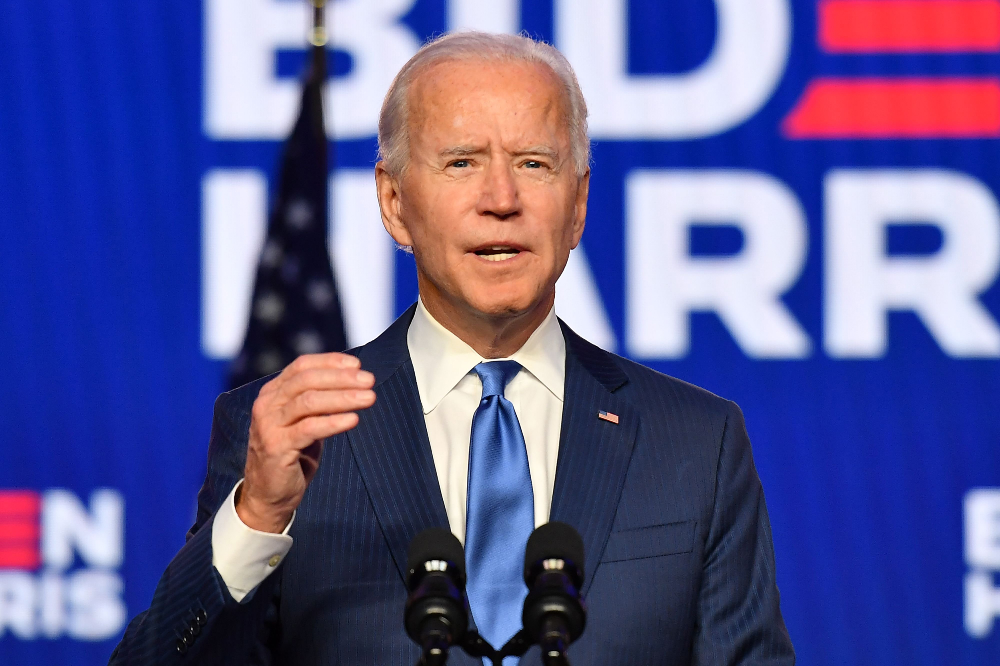

Midnight Discovery's mission to foster a relationship between modern internet technologies and us.
We strive to bolster the average person's life and income by exposing them to cutting-edge and future
proof concepts and career paths. Take one of our success stories for example:
In 2015, we began an experiment of taking a young person in a difficult situation, and getting them into coding.
The idea was that if we could prevent, or reduce, the years spent working at service, retail, or in manual labor,
then we could cost-effectively accelerate happiness of society.
We found one such individual, Cam, who was living in-between two homes. One infested with rodents and wine bottles,
and another with a struggling father who took to drink, bad relationships, and partying : and people in these environments
are not too uncommon.
First we began by buying him a chrome book, and motivating him to code. Then we paid him $100 for completing assignments.
$100 is a lot to a kid who has no source of income, and whose parents can not spare $10.
It worked. He began to take to HTML and felt proud of his accomplishments. By 16 he was performing useful work, creating
webpages, mastering linux, and solving coding challenges in Bitcoin. He was given Benjamin Franklin's Autobiography, Thomas
Paine's Rights of Man, the Four Hour Workweek, and Mastering Bitcoin. He never read them. He was also issued a dry eraseboard
with a calendar to keep track of schedules, some notepads, etc. that were also rarely used, but we stuck with him.
At that time, encouraged him to open his own website, to start a youtube channel, and to begin networking with programmers
and business people. We do not want to be the only source of his feedback, we want him to be independent. Through these interactions
and the process of making sales, he learned that insulting people and putting down their ideas was not an acceptable
way to interact outside his household. He learned to speak using clear language, and to avoid using phrases such as "I'll get it done."
and instead to say "I'll get the website uploaded to Github by 5pm Monday."
However, he came with his own strengths. He naturally excelled in sales and excitement. He took a keen interest in his
community, and participated in many social activities of his surroundings. But like the books, he refused to commit to the youtube
channel and preferred networking in social groups instead of business. Even to this day he spends his precious free-time
complaining about the government instead of preparing to join worklife, acquiring mentors, and studying successful new businesses.
It was at this time, that his government school program began suggesting that going $100,000 in debt, while avoiding work until 22 years old,
to get a certificate that says you are qualified to talk about the weather was a good path for his success. Combatting these
nightmarish influences took significant work. Eventually, through spitballing the Lambda School program off adults who
care for the welfare of all children, not just rich ones who can fail at everything in life and still succeed, he adopted the notion
of earning $60,000 to $100,000 by 19 or 20 with $15,000 debt was a better model; even if it was not the 'acceptable'
path taught in government school programs.
By 17 years old, as a senior in government school, he has developed a habit of daily marijuana. His recreation is not hiking,
sports, art, writing, expressing himself; or other hobbies that build strength over time, but these things are not encouraged in
government school. He has also prioritized standing on street corners yelling political slogans over meeting deadlines. Sadly,
this lead to a lack of happy clients, and the need for retail worklife.
After several months working retail for 30 hours a week, and without the ability to beg time-off and still get paid to go on dates,
deal with family issues, or attend 'a very necessary' street-corner shouting match, he learned that there is no easy way out. That for him,
the parents will not pay for his car repair bills, gas, or basic equipment needed for programming. He needs work, and $50 hour for
programming is better than $12 an hour in retail, though he must master managing his own schedule and descipline.
Today, he is back to making youtube videos again. Still very shy to show his own face and to take ownership of his own work.
While still using marijuana daily, he acknowledges how a life time of smoking can lead to a painful death. How substances are a cheap
form of gratification, and has put some effort into learning guitar. He began reading the Four Hour Workweek and Mastering Bitcoin again,
during breaks and lunch hour while working retail. He is more punctual, better at estimating timelines and product scope, and
has prioritized maintaining business contacts.
In November 2020, we bought him a $5,000 car to replace his former $1,000 vehicle that had already incurred $2,000 of repair bills and was
dangerously unsafe and gas efficient. We taught him how to shop for a car, looking for the cheapest price nationwide, and to
get 'value' instead of simply a vehicle that runs. For $5,000, after three weeks, he found a 2014 Toyota Prius on the facebook marketplace.
He is more committed than ever to the success of this project. As graduation approaches in May, we have lined up a position for him
at a growing marijuana farm while studying Lambda School parttime. This became available through our network of contacts, and suits his
interests. Likewise, the coworkers and manager of the farm is a wonderful father himself, and regularly express themselves through art and music;
thus a relatively healthy environment from which to grow, emotionally while catering to his preferences of fun and adventure.
And yet he is bringing a lot to the table. He is a programmer. He has a lot of energy and has negotiated contracts, fought customers on
pricing, and has dabled in marketing. He understands business about as well as anyone could who had to suffer the government's
indoctrination system into socialism and servatude.
But what is great about this process is that it is cost affordable and scales. For an initial $500 investment in equipment and rewards,
we were able to determine aptitude. For an additional $1,500 we were able to get functional products and useful work, while the student
developed skills that could eventually be worth $100 per hour.
Over the next couple years, we paid $3,000 or so annually for small projects, at prices slightly below market but at a minimum $30 per hour,
to get what we needed done and helped him to acquire new clients.
This is capitalism, with a deep commitment to social responsibility. Developing the youth, quickly and cost-effectively, for high-teir jobs
not only brings about happiness, individuality, and ownership; but creates large families, accelerates business, and possibly millions in
savings, investments, and ownership interests by 25 years old, while others are just getting started.
It is a deep shame in life that so many struggle, not realizing that how quickly the body whithers. Starting a family, aquiring wealth after
35 to 40 might already begin to seem too late. A fundamental cause of deep depression and suicide. How learning to express oneself and to
cultivate mutually beneficial relationships, while maintaining a concentrated focus on development and growth outweighs bandwagon excitement,
screaming, and teasing.
Next year, we hope to pay for his schooling, $15,000; there is no practical way he will be able to attend otherwise. While farming marijuana,
he will pay his own room and board and begin adopting to an environment free of violence, attempts to kidnap him or his brother for money,
and a place to live in which caring for each other is a norm. He knows what it is like to live with mice, raindrops, and failed power bill
payments, he has yet to know what it is like to live without daily, continuous stress.
Our hope is that through his work, he rescues his brother and puts him on a similar path to success, develops a health relationship,
and secures all the common joys that should be made available to all man - a spouse, a house, and a home full of children - with plenty of
time to spend with them through investing and aggressive promotion into high paying positions. My personal motto is that all persons should
be able to have these things and 'retire' by 40.
But retirement to me just means living like a rich kid. Living in such a way that basic food, shelter is of no concern. Retirement means choosing
for whom you work and win. Retirement means a high self-esteem, high pay, and high commitment to improving the self and society at all times.
Benjamin Franklin, with his dozen siblings and no inheritience or wealth to speak of, retired by 40. And you can too. His techniques were
outlined in great detail in his autobiography, and we have translated them into practice in ourselves and through our commitments to spreading them
throughout society. The 13 Virtues, the Junto System, the quick adoption of high paying skills and subsequent leveraging those into management, and then
lastly the final piece of the puzzle is aggressive investment in youth, which he did by 35. It was through his profits from their development
that allowed him to retire by 40, and begin his fulltime work into spreading self-managed freedom and delevopment of practical innovations.
Midnight Discovery is an extension upon his legacy. Each youth freed from the boundage of low wages and a life of misery is a testament to his
success. He came from nothing and he became everything, and we believe that power exists in the world today; if only we go forth and find it.
This is Cam.

This is Cameron today, proprietor of www.camerondaycustomwebsites.net
Insert Picture today, possibly with car, a laptop, computer other business stuff.
If you know others who would be suitable for our system, please make recommendations. Our speciality is in youths, ages 13 to 16,
because we believe a well delevoped child can care for siblings and parents more easily than an adult can 'change their identity'.
In my experience, adults would rather argue about why they can not change, than do the work. But we are open to everyone.
If you would like to fund our mission, you can do so by contributing through Paypal or Bitcoin. It takes about $5,000 to get started with
each child, and about $20,000 to see them through until the end, with a 5 year cycle until they can begin 'paying it forward' to
new children that follow them.
Thank you so much for your time. Have a good day, and a more hopeful life. Midnight Discovery.
If you are interested in get contact with us please sign up for the email list.
If you would like to donate to foster our cause please click the button below to be taken
to our donation page. We are a 501(c)3. There will also be a donation link for JFK tokens.